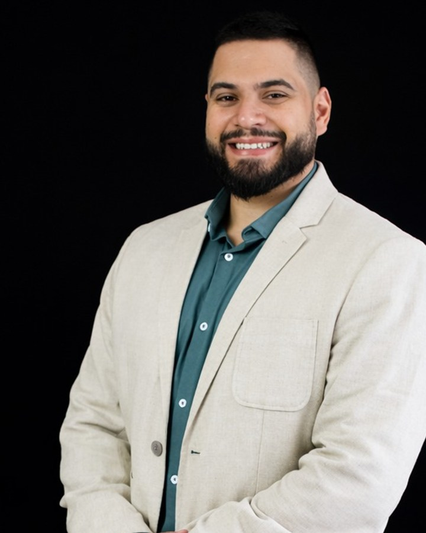

Eu coloco a IA para trabalhar dentro do seu time comercial.
Mapeio o processo de vendas, conecto a IA ao CRM, ao e-mail, à agenda e ao WhatsApp, e deixo a rotina rodando sozinha. O vendedor volta a fazer o que gera receita: conversar com cliente.

Passe o mouse em cada etapa para ver tempo e conversão. Números ilustrativos: medianas de mercado em vendas B2B e a minha operação. Variam conforme processo, produto e ticket.
Números da operação Enterprise que eu montei do zero em 2026 numa plataforma SaaS de inteligência de mercado. Não é teoria: é o meu dia a dia.
Para empresas que já vendem e querem vender com menos atrito.
Times de vendas B2B de 3 a 10 pessoas
Já existe processo e meta, mas o vendedor perde horas com CRM, lista e follow-up.
Indústria e marcas no varejo e no marketplace
Muitos canais, muitos dados de mercado e pouca gente para transformar isso em ação comercial.
Empresas com CRM que ninguém confia
HubSpot ou Pipedrive contratado, dado incompleto e relatório montado à mão toda segunda-feira.
Sinais de que é hora
O gestor monta o relatório do funil na mão.
Reunião boa acaba sem registro no CRM.
Lead responde e fica dias sem retorno.
O time testou IA, mas não mudou a rotina.
Vendedor sênior gasta tempo pesquisando empresa.
Ninguém sabe dizer quais negócios estão parados.
Seu time comercial gasta o dia em tarefas que a IA já faz.
O CRM está sempre atrasado
Reunião sem registro, etapa errada, próximo passo esquecido. O gestor decide com dado velho e o forecast vira palpite.
Vendedor virou digitador
Pesquisar empresa, montar lista, escrever follow-up, preparar reunião, atualizar planilha. Horas por semana longe do cliente.
A IA foi comprada, mas ninguém usa
A licença está paga e o time testou duas vezes. Sem processo desenhado e sem dado conectado, a IA vira um chat bonito que não muda o resultado.
Primeiro o processo. Depois a ferramenta.
Comecei a carreira como desenhista técnico. Até hoje trabalho assim: medir antes de cortar.
Diagnóstico
Acompanho o time, mapeio o funil e meço onde o tempo vai embora.
1 a 2 semanasDesenho
Escolho as automações de maior retorno e defino o que fica com a IA e o que fica com gente.
1 semanaPiloto
Coloco uma rotina para rodar com um vendedor ou um time pequeno e meço o antes e depois.
2 a 3 semanasImplantação
Conecto a IA ao CRM, e-mail, agenda e mensagens, com regras claras e registro de tudo.
3 a 6 semanasAdoção
Treino o time no fluxo novo. Automação que o vendedor não usa não existe.
contínuoMedição
Painel com horas devolvidas, velocidade do funil e conversão por etapa.
mensalRotinas que eu já construí e rodam todos os dias.
Cada item abaixo existe e está em produção na minha operação. Adapto para o seu CRM, o seu mercado e o seu jeito de vender.
Encontrar a empresa certa
- Varredura semanal de marcas novas por categoria
- Classificação: marca, distribuidora ou revenda, com empresa-mãe e filhas
- Faturamento e categoria da marca no Mercado Livre gravados no CRM
- Clientes da base com potencial para o plano maior
- Enriquecimento de contatos com checagem antes do envio
Falar com a pessoa certa
- Seleção semanal de quem entra na sequência de e-mail
- Primeira abordagem no LinkedIn para quem não tem e-mail
- Fila de ligação a partir de quem abriu, clicou ou leu o material
- Conferência no LinkedIn se o contato ainda está na empresa
- Mensagens de WhatsApp registradas no CRM
Chegar preparado
- Briefing das reuniões do dia: contrato, uso, loja, concorrentes e dossiê público
- Raio-x da marca e estudo de mercado da categoria
- Notas da reunião registradas no CRM com tarefas, todo dia às 18h
Fechar com menos idas e vindas
- Proposta montada com anúncios, concorrentes e investimento
- Clarificação de escopo e formulário de pedido
- Comparação do contrato enviado com o devolvido pelo cliente
- Pedido técnico aberto para o time de dados, com prazo
Nada fica parado
- Follow-up semanal por etapa: resposta, reunião e proposta
- Alerta de negócio parado com sugestão de próximo passo
- Monitor da caixa de entrada três vezes ao dia: respostas, bounce e agenda
- Status semanal dos clientes em expansão
O gestor vê tudo
- Painel diário do funil, em português e inglês
- Painel de tarefas do dia
- Contatos e empresas associados aos negócios; duplicados mesclados
- Resumo semanal de todas as rotinas, com o que falhou
- Post no LinkedIn a cada quinze dias
Quer saber quais tarefas do seu time a IA assume primeiro?
Em 15 minutos eu olho o seu funil e aponto por onde começar. Sem proposta e sem compromisso.
Uma operação Enterprise montada do zero, com a IA no meio do processo.
Em 2026 assumi a venda do produto Enterprise de uma plataforma SaaS de inteligência de mercado para Mercado Livre e Shopee. Não havia processo, lista nem cadência. Em vez de contratar gente para a rotina, eu construí a rotina com IA.
Hoje a IA conectada ao CRM, ao e-mail, à agenda, às notas de reunião e ao design prepara, registra e cobra. Eu fico com a conversa, a negociação e o cliente.
O mesmo desenho já tinha funcionado antes, sem IA generativa: numa boutique de M&A automatizei 80% da comunicação comercial e ganhei 40% de produtividade com a migração para o HubSpot.
Quanto tempo o seu time pode ganhar?
Mexa nos números do seu time. É uma estimativa; o diagnóstico mede o valor real.
Conta: vendedores × horas das tarefas escolhidas × 4,3 semanas × parte da IA. Os valores iniciais são um exemplo, não promessa de resultado.
Quer fazer essa conta com os números reais do seu time?
A conversa de 15 minutos sai com uma estimativa de horas para a sua operação.
Quatro formas de começar.
Tudo começa com a conversa grátis de 15 minutos. Depois, do diagnóstico fechado ao acompanhamento mensal; o escopo e o investimento saem do diagnóstico.
Diagnóstico de IA comercial
- Mapa do funil e das tarefas do time
- Horas gastas por tarefa
- Lista de automações por retorno
Entrega: relatório com plano de 90 dias.
Implantação
- Piloto com medição
- IA conectada às suas ferramentas
- Regras, permissões e registro
Entrega: rotinas em produção e painel de resultado.
Workshop para o time
- IA aplicada ao dia do vendedor
- Prática com o CRM da empresa
- Biblioteca de comandos do time
Entrega: time usando no dia seguinte.
Acompanhamento
- Ajuste e evolução das rotinas
- Novas automações por trimestre
- Relatório de ganho
Entrega: operação melhorando todo mês.
Conheça quem está por trás17 anos entre a fábrica, o M&A e o SaaS. Jornada completa e palestras.
Da fábrica ao algoritmo: entendo a empresa por dentro antes de automatizar.
Comecei aos 15 anos como aprendiz na indústria. Passei por engenharia de aplicação, originação de M&A e vendas Enterprise em SaaS. Essa mistura me deixa conversar com o técnico, com o vendedor e com o C-level na mesma reunião.
Fundei a DS Advisory em 2019 para levar método a pequenas e médias empresas. Hoje a consultoria tem um foco: IA e automação na operação comercial.
- 2009 a 2014
- Indústria. Aprendiz aos 15; aos 19 liderava uma equipe técnica de mais de 10 pessoas no planejamento de manutenção.
- 2014 a 2019
- Engenharia de aplicação. Pré e pós-venda técnica para Petrobras, Braskem, Basf, Vale e Oxiteno.
- 2019 a hoje
- DS Advisory. Consultoria de processo comercial, growth e precificação para PMEs e startups.
- 2020 a 2025
- M&A. Originação no middle market, mais de 90 mandatos com a equipe e 250% de crescimento da operação.
- 2026
- SaaS Enterprise. Operação comercial montada do zero com IA no centro.
- Formação
- MBA em Gestão de Negócios pela USP/ESALQ, com TCC em onboarding de clientes SaaS. MBA em Private Equity, Venture Capital e M&A pela Trevisan.
Palestras com demonstração ao vivo.
Nada de slide cheio de promessa. Eu mostro a IA rodando com dados de verdade, no palco.
IA sem dado é criatividade sem direção
Como marcas e sellers usam IA conectada a dados de marketplace para decidir preço, sortimento e concorrência em minutos.
Para: e-commerce, marcas, varejo e indústriaO vendedor que não digita mais
Como montei uma operação comercial em que a IA prepara, registra e cobra, e o vendedor só conversa e fecha.
Para: líderes de vendas, RevOps e donos de empresaDa fábrica ao algoritmo
17 anos entre chão de fábrica, M&A e SaaS: o que muda e o que não muda quando a IA entra na empresa.
Para: MBAs, associações e eventos de gestão“Vender é gerar confiança, com método, preparo e propósito.”
Antes de começar.
A conversa de 15 minutos é mesmo grátis?
Sim. Ela serve para você entender por onde a IA entra no seu time. Se fizer sentido seguir, o próximo passo é o diagnóstico, com preço fechado.
Preciso trocar meu CRM?
Não. Eu trabalho em cima do que o time já usa. HubSpot e Pipedrive são os mais comuns; outros entram no diagnóstico.
E a segurança dos dados dos meus clientes?
Cada automação tem permissão mínima, registro do que fez e regra clara do que precisa de aprovação humana. Nada sai para cliente sem o ok de alguém do time quando a regra pede.
Em quanto tempo vejo resultado?
O piloto já mede o antes e depois em 2 a 3 semanas. A operação completa leva de 6 a 10 semanas, conforme o tamanho do time.
Meu time não é técnico. Funciona?
Funciona. O meu time também não é. A IA trabalha nos bastidores e o vendedor recebe a tarefa pronta: quem ligar, o que dizer, o que registrar.
Vocês fazem palestra em evento interno?
Sim. Convenções de vendas, encontros de associação, turmas de MBA e eventos de e-commerce. A palestra tem demonstração ao vivo.
Conversa grátis de 15 minutos.
Uma conversa rápida para olhar o seu funil. Você sai sabendo por onde a IA entra no seu time, mesmo que a gente não trabalhe junto.
- Minutos 1 a 5Você me conta como o time vende hoje: tamanho, CRM, canais e onde o tempo vai embora.
- Minutos 5 a 12Eu aponto 2 ou 3 tarefas que a IA pode assumir primeiro, com exemplos que já rodam na minha operação.
- Minutos 12 a 15Você sai com uma estimativa de horas por mês e o próximo passo. Sem proposta empurrada.